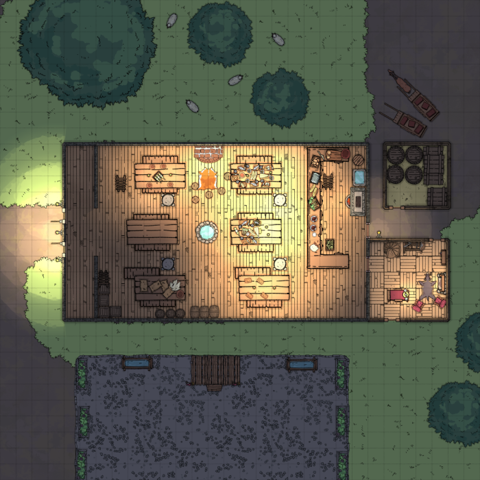
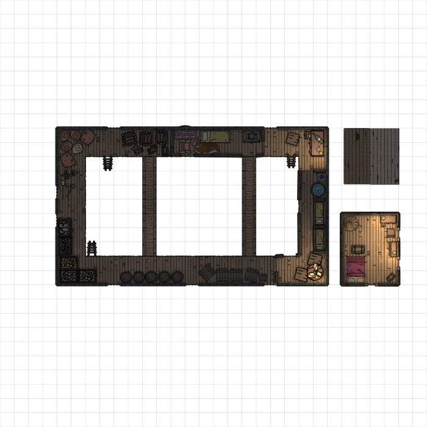
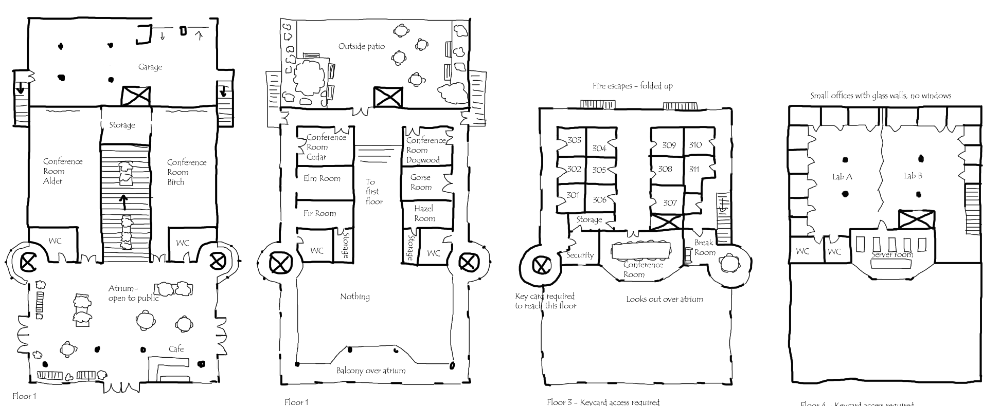

Maps as worldbuilding
There are a few things to keep in mind when making maps.
First, how does the encounter run? At the end of the day, you are playing a game, and if you're using a map then 9 times out of 10 it's a tactical game of some sort. Imagine how it will be played. What features give players advantages and disadvantages? Where do players want to go? What goals might they have beyond just killing? This is the most important part of making a map for your adventure.
This blog post is about the less important part of mapmaking.
Worldbuilding
Maps tell a story, especially maps centered around places where people live. What is this space used for normally, before the players showed up and started causing trouble? How does its construction and the objects lying around reflect that? What problems are being solved by the things you find in this location?
What's the history of this location? How was this used in the past, and how do traces of that still linger? How does this place show the wealth and prestige of those who use it, or the opposite? What is valued, and what is undervalued?
I'll walk through two recent examples, an old one and a new one.
The tavern
Mandatory self-promotion: this is part of this map pack.
Clearly, it's a tavern. But it's bigger than it needs to be, because an old fort was retrofitted into being a tavern. So this has a pragmatic game benefit: both battles and tavern scenes can happen here. Or both - maybe the players first enter it as a tavern, but the construction foreshadows repurposing it to defend against the undead invasion. But, this also tells you, this place used to be more dangerous, it's safer now, and it could be more dangerous again. It also tells you they reuse buildings. They don't let things go to waste.
And the big communal tables suggest that it's also a meeting place, that the people in the town like to gather here with others. The food is mostly constrained by the graphical assets I have, but there is meat and fish. Fresh water is nearby, and while this is not a rich town they have not just enough to eat, but a pretty varied diet. As medieval villages go, this is not a bad place to live. There are also some chairs closer to the fire - who sits here? The elders of the village? Maybe a storyteller? The building is also bigger than it has to be. Corners are unlit, to save on fuel, and over time the distant corner has been repurposed for storage.
Attached is the reeve's house. The first floor is meant to be "nice", for receiving villages. Here, you see some dyed red cloth and a fur rug, and a display of some weapons. There is a slightly more complicated wooden floor. But it's small, and not what we might think of as opulent. The reeve is better off than average, but not lording it above the others. And wealth here looks quite different than it might in the city.
If we look upstairs, we can see that the upper floors have even more aggressively been retrofitted. There used to be platforms so defenders could shoot out the upper windows, but now it's mostly storage. Some crude walls have been made, turning some of the upper area into living space. No space is left to waste here - buildings are expensive. The reeve's room, by contrast, is a bit more roomy, and you again see the red blankets to contrast with the yellow on the smaller beds upstairs. But when I think of what a "nice" house looks like, I think of the historic "nice" houses I've seen, which are still pretty plain. And the tavernkeeper still has a lot of room and a lot of furniture - still better off than average - but the way things are set up reflects pragmatism vs a need to project wealth.
There are no attached rooms, because they don't get many visitors.
The Lab
This is a completely different map, a modern map, for the BLOT zine for BOLT, before I marked it up a bit. It isn't yet available, but it'll be out soon. This is based on an amalgamation of buildings I've seen, both corporate and academic. I imagine it being used for a heist type adventure, where you have to get something, or find some kind of evidence, or similar, on the top floor.
The atrium, stairs, and outside patio reflect those of buildings trying to aggressively project wealth. This is some wildly inefficient use of space, but it also looks very nice. You can imagine a sleek modern atrium space full of people in suits with lanyards, and a wide, gradually sloped staircase with planters in the middle. I imagine this place hosting small corporate conferences and similar events. Maybe dress the part and wear a fake lanyard and you can find out the things you need to know and scope out how you might get upstairs.
The conference room overlooks the atrium, and a wall of blinking lights in the server room serves more to project the idea of technology than to actually be a practical place to put your computers. These last two displays of wealth of course leave the upper, secure floors vulnerable. This is also based on a real place, that was clearly built to look cool to potential donors. You walk into the atrium and see the blinking servers and think, "ah yes, technology is happening in here".
The round glass elevators look cool, but get to the third floor and entry is controlled via a single elevator and a front desk. Elevators are great for security because you can require keycards and you can't accidentally leave an elevator open. The other elevator doesn't reach all the way, because then you'd need two front desks to control entry. But there's a fire escape. You can't just build a death trap - someone came and inspected the place. The fire escape should go up higher, but I cheated for gameplay reasons. Similarly, it's a modern building, so every part is reachable by elevator, doubly so because labs need to get heavy equipment in.
On the third floor, everyone is working in different offices, isolated from each other. In the modern day, individual offices are a display of wealth, but also allow secrecy. You might have several people crammed into one, though. On the fourth floor, though, everything is open. Here, everyone is working together, and everyone is on board with whatever nefarious thing is secretly happening here. It's also great space for, say, an experimental robot.